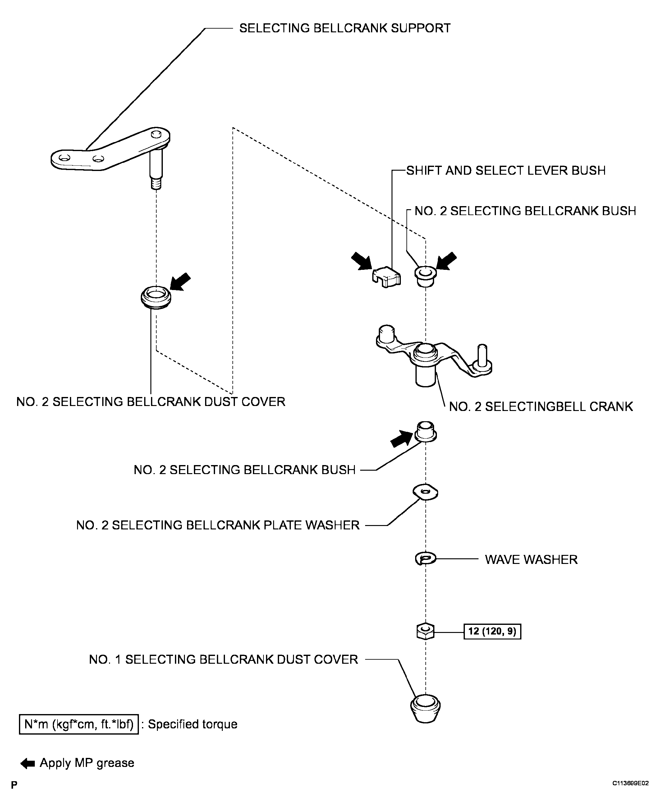
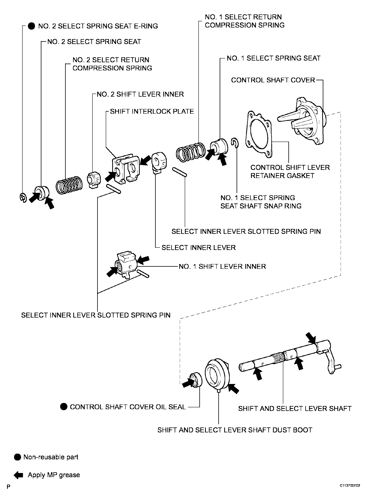

Shift And Select Lever Shaft: Components
Fig 1: Identifying Shift And Select Lever Shaft Components (1 Of 2)

Courtesy of © TOYOTA, LICENSE AGREEMENT TMS1002
Fig 2: Identifying Shift And Select Lever Shaft Components (2 Of 2)

Courtesy of © TOYOTA, LICENSE AGREEMENT TMS1002